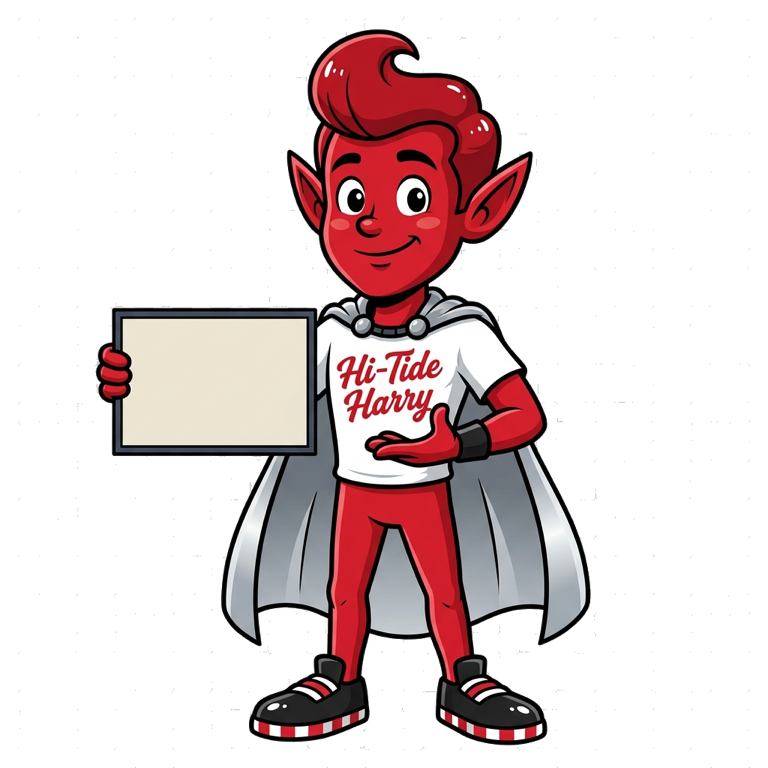

One visual field guide for visitors, registered alumni, committee members, and the site owner. Follow a real link, learn what it does, and see the boundary that keeps reunion information protected.
✦ Current capability map. Live access depends on your role and the deployed release.

OPEN THE GUIDE
Start where you are. The system shows you only what you are allowed to use.
Chapter 01 · Anyone can begin here
The public reunion experience.
Every public stop has a job. These are the real entry points—from buying your $30 mixer ticket to adding a memory for the class.
Chapter 02 · Verified alumni only
My Reunion is your private seat.
Registered alumni get one account, one private record, and a reunion workspace that travels with them. It never stores ticket credentials or personal data in the browser.
✦
Sign in to open the attendee chapter.
This part of the guide is shown after a verified My Reunion session confirms your access.
Sign in with the verified email used for your paid mixer ticket, then open My Reunion Experience. Account registration alone does not grant participation. Your wallet and account help remain available if your ticket is not linked or has been refunded.
1996 Trivia
Open 1996 Trivia, start an open round, and choose one answer at a time. Each answer is final. Correct starter answers earn 100 points, with no speed bonus. All tied top scores share the winning place. The committee publishes final results in your experience.
Guess Who?
Open Guess Who?. Write three or four clues about yourself, give permission, and choose Save clues for review. Check the saved status. Edit before selection; use Withdraw my clues to remove an entry later. Withdrawal removes any affected round from play and results.
During an open round, guess the classmate’s full current or maiden name once per card. Answers and scores stay hidden until the committee reveals them. You cannot guess your own card; selected contributors receive 100 points for their own card after guessing another card.
Photos & Memories
Open Photos & Memories, choose a photo you have permission to share, add its title and caption, and save it for review. Check that it says pending. Approved photos appear only after committee review and permission. Your original stays private. Withdraw an upload to remove it from the gallery.
Requests and ideas
Use Request a Song or Suggest a Game. Save the song and artist or your game idea, then check its status and committee note under your submitted ideas. Acceptance is not a guaranteed song play. Editable requests can be corrected or closed.
Committee: review the queues
Open Reunion activities. Expand Photos & Memories to inspect the photo preview and permission before approving. Expand Song requests & game ideas, choose a decision, add a note, and select Save decision. Refresh to confirm the saved state. Reject an approved photo to remove it from the gallery.
Committee: host a round
In Reunion activities, approve at least two suitable clue sets, select them, and Create draft round. When ready, Open guessing; then Close guesses, check scores, and Reveal answers & publish winners. Use Remove round from play & results if a correction is needed.
In 1996 Trivia, review the 30-question starter draft and its sources before opening. Questions marked published are included when the round opens; they do not open the round themselves. Use Open round → Close round → Publish results & winners. Archive an incorrect round; questions freeze once play starts.
Only committee leads and the site owner can manage game rounds. Committee members can review permitted photo and suggestion queues. No prize or opening time is promised. If a connection fails, keep the form open and retry; use Refresh to check whether a save already reached the server.
Chapter 03 · Permission controlled
The Committee Desk runs the room.
Committee members remain alumni first. The Desk gives them only the operational tools their server-checked role permits—never a generic WordPress dashboard.
✦
Committee access is checked on the server.
Sign in with your verified attendee account. The Desk then reveals only your authorized operational chapters.
The Site Owner has the extra responsibility of roles, audit visibility, content structure, worker health, and the separate CMS/commerce plane. Those controls are deliberately not part of attendee or committee access.
✦
Owner controls are never public navigation.
They become visible only inside the authorized Admin Portal. Payment settings, provider secrets, private exports, and maintenance remain outside this guide.
Capability-filtered operations, moderation, protected attendee context, and accountable replies.
Role-checked operations
04
Owner CMS & commerce
Editable content, products, orders, refunds, payment truth, integrations, and maintenance.
Owner-only control plane
End credits
Know the stage. Then take your place.
Return to this guide any time. It points to live destinations, says what a feature really does, and makes the line between public reunion magic and protected operations visible.